Camshaft Position Sensor: Testing and Inspection
Visual Inspection1. Remove the camshaft position sensor
2. Make sure that the camshaft position sensor is free of any metallic sharings or particles. If metallic sharings or particles are found on the sensor, clean them oft.
3. Install the camshaft position sensor.
Frequency Inspection
1. Connect NGS tester to DLC-2.
2. Start the engine.
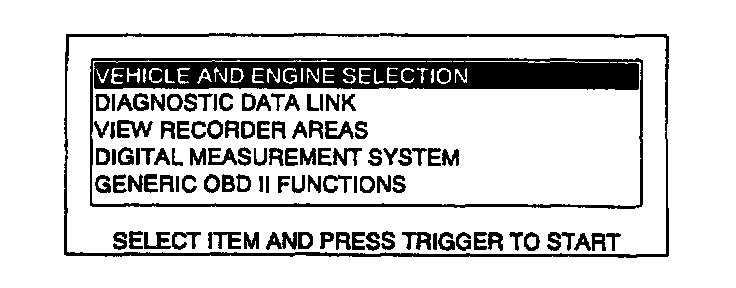
3. Move the cursor to VEHICLE AND ENGINE SELECTION.
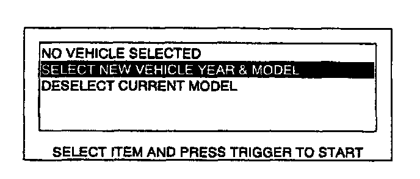
4. Move the cursor to SELECT NEW VEHICLE YEAR & MODEL. Press the trigger key to enter this selection.
5. Move the cursor to 1999-VIN#10:X. Press the trigger key to enter this selection.
6. Move the cursor to appropriate model. Press the trigger key to enter this selection.
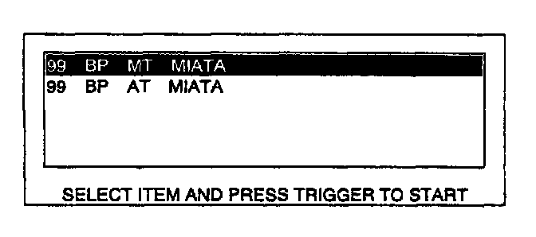
7. The vehicle selection screen showing the selected vehicle will be displayed. Move the cursor to the vehicle selected. Press the trigger key.
8. Connect NGS tester test leads to the following PCM connector terminals:
(+) lead - PCM 2H terminal
(-) lead - PCM 3C terminal
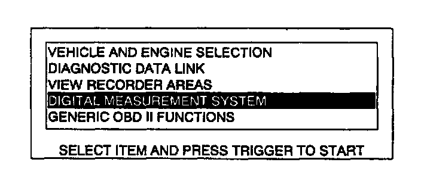
9. Move the cursor to DIGITAL MEASUREMENT SYSTEM. Press the trigger key to enter this selection.
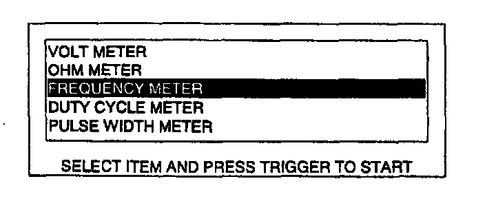
10. Move the cursor to FREQUENCY METER. Press the trigger key to enter this selection.
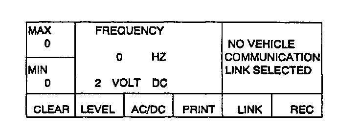
11. The FREQUENCY METER screen will be displayed. Press LINK key to select RPM PID.
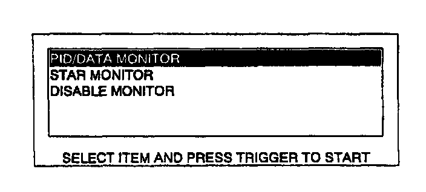
12. Move the cursor to PID/DATA MONITOR. Press trigger key to enter this selection.
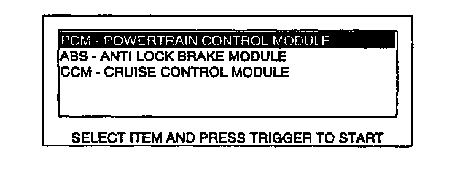
13. Move the cursor to PCM. Press trigger key to enter this selection.
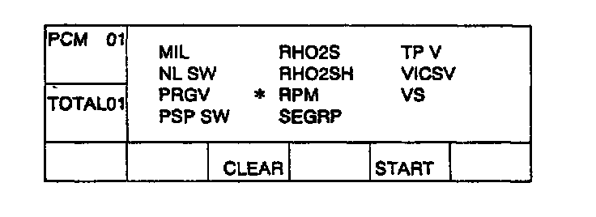
14. Move the cursor to RPM. Press trigger key to select PID.
15. Press START to begin.
16. The FREQUENCY METER screen will be displayed.
NOTE:
- The selected threshold voltage indicated on the FREQUENCY METER SCREEN should be 2 VOLT DC. If incorrect threshold voltage is selected, incorrect frequency values is indicated. Press LEVEL to select correct threshold voltage if incorrect threshold voltage is selected.
- Threshold voltage should be DC range. Press AC/DC key to select DC range.
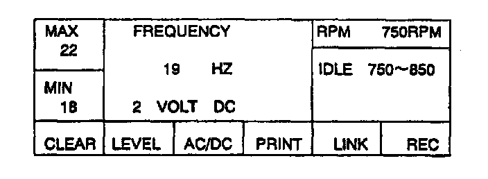
17. Inspect the frequency value and RPM PID.
Specifications
RPM PID: 750-850 RPM
FREQUENCY: 18-22 Hz
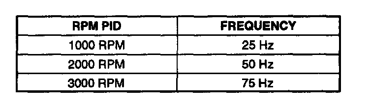
NOTE:
18. Press LEVEL key to change the threshold voltage to 6 VOLT.
19. Make sure that the FREQUENCY indicates 0 Hz.
20. If FREQUENCY value is out of specifications, inspect follows:
Open circuit
- Camshaft position circuit (Camshaft position sensor connector terminal B and PCM connector terminal 2H.)
- Power circuit (Camshaft position sensor connector connector terminal A and main relay terminal D through common connector.)
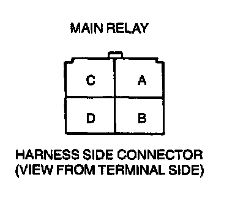
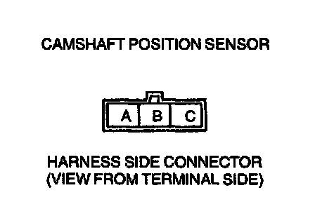
- Ground circuit (Camshaft position sensor terminal C and body ground.)
Short circuit
- Camshaft position sensor connector terminal B and PCM connector terminal 2H to ground.
- Camshaft position sensor connector terminal A and main relay terminal D through common connector to ground.
21. Reconnect the camshaft position sensor connector.
22. Check the camshaft pulley for damage and cracks.